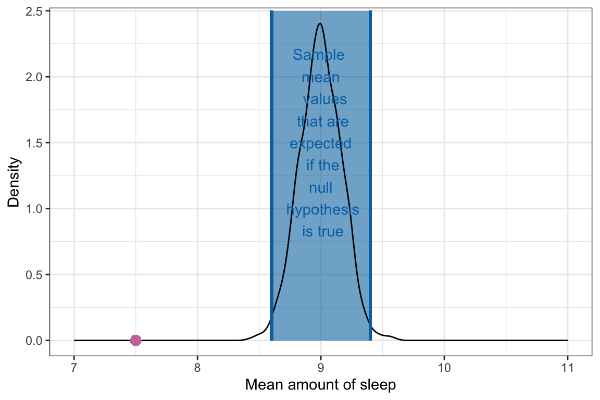

| Summary | Sample | Population |
|---|---|---|
9 Hypothesis Testing: One-Sample t-Test
In this chapter you will learn how to carry out a one-sample t-test to statistically compare a sample of data to a standard by accounting for the sampling uncertainty.
9.1 Statistical Inference and Hypothesis Testing
One common approach to statistical inference—the drawing of conclusions about populations based on sample observations—is to use the sample observations to test a priori hypothesis1 about the population. Hypotheses are mathematical statements about population parameters which are often formed based on prior knowledge and substantive literature in the area of content.
In the social sciences, we typically write out two hypotheses about the population parameters: the null hypothesis (\(H_0\)), often referred to as a statement of no effect, and the alternative hypothesis (\(H_A\)), often termed the research (or alternative) hypothesis. For example, here are a set of potential hypotheses about teen sleep:
\[ \begin{split} &H_0: \textrm{The mean amount of sleep for all teens is equal to 9 hours.} \\[1ex] &H_A: \textrm{The mean amount of sleep for all teens is less than 9 hours.} \end{split} \] There are a few things to notice about these hypotheses:
- The statements are about the mean amount of sleep (i.e., summary measure).
- The statements are about the population (all teens), not the sample.
- The null hypothesis (\(H_0\)) is a statement of equality (is equal to).
- The alternative hypothesis often indicates the researcher’s belief about the population summary (e.g., we think the average amount of sleep for all teens is less than 9 hours).
Statisticians often use the language of mathematics to express these hypotheses. The same hypotheses expressed via the language of mathematics are:
\[ \begin{split} &H_0: \mu_{\textrm{Sleep}}=9 \\[1ex] &H_A: \mu_{\textrm{Sleep}} < 9 \end{split} \]
The Greek letter mu (\(\mu\)) denotes a population mean. In general Greek letters represent population parameters while Roman letters represent sample statistics. Here are a list of common statistical summaries and the mathematical notation used to denote them.
The alternative hypothesis is always an inequality. In this example, the alternative hypothesis is the mean is LESS THAN 9 hours. Another potential alternative hypothesis would be that the mean is GREATER THAN 9 hours, while a third possibility is that the mean is NOT EQUAL TO 9 hours. Mathematically these could be expressed as \(\mu_{\textrm{Sleep}}<9\), \(\mu_{\textrm{Sleep}}>9\), and \(\mu_{\textrm{Sleep}}\neq9\). The alternative hypothesis you choose is based on your conjecture about the population. For example, if we believed that teens sleep, on average, less than 9 hours a night, then the alternative hypothesis we choose would be \(\mu_{\textrm{Sleep}}<9\). If we thought they sleep more than 9 hours, on average, we would adopt the alternative hypothesis of \(\mu_{\textrm{Sleep}}>9\). If we are unsure about whether they sleep less or more than 9 hours, then our alternative hypothesis would be \(\mu_{\textrm{Sleep}}\neq9\).
9.1.1 The Null Model
A hypothesis test is predicated on the assumption that the null hypothesis is true. Thus, we want to produce a sampling distribution of potential sample summaries that we could see if \(H_0: \mu_{\textrm{Sleep}}=9\) is actually true. In other words, we are carrying out a thought experiment assuming that the average amount of sleep for all teens is actually 9 hours.
If we were able to carry out this thought experiment, here is what the sampling distribution of the sample means would look like:
This distribution is also known as the null distribution since it is the sampling distribution that arises from the thought experiment assuming the null hypothesis is true. Describing the features (shape, center, and variation) of this null distribution we find:
- The distribution is unimodal and symmetric.
- The mean (center) of the distribution is at 9 hours.
- The SD of this distribution (the SE) is approximately 0.20.
Interpreting these features, we find that in the thought experiment where we assume the mean amount of sleep is 9 hours, a typical mean is 9 hours! But, sample means will vary from 9 hours. That is, even if the true mean amount of sleep is 9 hours, we could expect a sample mean that differs from 9 hours. How much they will vary depends on the SE, which is approximately 0.20.2 So, it would not be unusual to see a sample mean as low as 8.6 (\(9 - 2(0.20) = 8.6\)) or as high as 9.4 (\(9 + 2(0.20) = 9.4\)).
The null distribution will always be centered at the parameter value specified in the null hypothesis! The SE of the null distribution gives us an indication of how much a sample statistic is likely to vary from the parameter specified in the null hypothesis. We expect most values will be within 2 standard errors of the center.
9.1.2 Evaluating the Observed Sample Mean
The null distribution gives us an indication of the range of sample mean values that are expected assuming the null hypothesis is true. Using the null distribution as a reference, we can evaluate the mean we obtained from the observed data, which was 7.5 hours (see Chapter 7).

We can see from Figure 9.3 that the observed mean of 7.5 is not a value we expect if the population mean amount of sleep teenagers get is truly 9 hours. It is, in fact, far less than we expect. In other words,
The sample mean of 7.5 hours of sleep we observed in the data is not consistent with the hypothesis that the average amount of sleep teenagers get a night is 9 hours.
Because the data were not consistent with our initial hypothesis, we would reject the null hypothesis, that is, the empirical evidence (data) does not support the hypothesis.
While the method we used allows us to say whether the empirical data are consistent with the null hypothesis that teenagers get, on average, 9 hours of sleep, it does not tell us the level of consistency. Is it slightly inconsistent? Or really inconsistent? Because of this, applied researchers will often quantify this via two measures: (1) the t-value, and the p-value.
9.2 Quantifying the Level of Consistency with the Null Hypothesis: The t-Value
The t-value quantifies how far away the observed mean is from the hypothesized mean value in standard error units. To compute the t-value we use the following:
\[ t = \frac{\mathrm{Obs.~Mean} - \mathrm{Hyp.~Mean}}{SE} \]
where, Obs. Mean is the observed sample mean from the data, Hyp. Mean is the hypothesized value in the null hypothesis, and SE is the standard error in the null distribution (which we compute via bootstrapping). Computing this for our example,
\[ \begin{split} t &= \frac{7.5 - 9}{0.17} \\[2ex] &= -8.82 \end{split} \] The t-value indicates that our observed sample mean of 7.5 is 8.82 standard errors below the hypothesized population mean value of 9. Changing the distance metric to standard error units helps standardize the distance for other scholars so they can better interpret how discrepant the observed mean is from the hypothesized value.
For example, if we hadn’t divided by the SE, we would have said our observed mean of 7.5 hours of sleep is 1.5 hours less than the hypothesized mean of 9 hours of sleep. Is this a lot less? Or a little less? The answer to that depends on how much we expect sample means to vary from the population mean under random sampling. This is what the SE quantifies. So dividing by the SE accounts for this expected variation and also changes the units from “hours of sleep” to “standard errors”.
Now that we have a t-value, how do we judge its magnitude? To do this, we can again look back to the null distribution in Figure 9.3. Based on the null distribution, we said we expected sample means to fall in between 8.6 and 9.4. What are the t-values associated with 8.6 and 9.4?
\[ \begin{split} t &= \frac{8.6 - 9}{0.17} \\[2ex] &= -2.35 \\[4em] t &= \frac{9.4 - 9}{0.17} \\[2ex] &= 2.35 \end{split} \]
Expecting a sample mean between 8.6 and 9.4 is essentially the same as expecting a t-value between \(-2.35\) and 2.35.
Rule-of-Thumb: An observed mean that has a t-value with an absolute value less than 2 is fairly consistent with the null hypothesis being true. An observed mean that has a t-value with an absolute value greater than 2 is less consistent with the null hypothesis being true, and the further away from 2, the more evidence against the null hypothesis.
9.2.1 The t-Distribution
Recall that the null distribution is simply a distribution of sample means we expect if the null hypothesis is true. Because each case in this distribution is a sample mean, we could transform each case into a t-value. If we do that, the resulting distribution is a t-distribution.
The t-distribution is is the sampling distribution that arises from converting the null distribution from the thought experiment assuming the null hypothesis is true to t-values. Describing the features (shape, center, and variation) of this t-distribution we find:
- The distribution is unimodal and symmetric.
- The mean (center) of the t-distribution is 0.
- The SD of this t-distribution (the SE) is approximately 1.
Note that the descriptions referred to “this t-distribution”. That is because there are many different t-distributions; in fact there are an infinite number of them. Each t-distribution is based on a parameter called the degrees-of-freedom (df), which is in turn based on the sample size for the observed data. The df for the t-distribution is computed as:
\[ \mathit{df} = n - 1 \]
where n is the sample size.
The degrees-of-freedom parameter impacts the shape and SE (variation) in the t-distribution. Figure 9.5 shows the t-distribution based on a few different degrees-of-freedom values. From this figure we can see:
- Every t-distribution is unimodal and symmetric, although t-distributions with smaller degrees-of-freedom parameters are shorter and have thicker tails than t-distributions with higher degrees-of-freedom parameters.
- The mean (center) of every t-distribution is 0.
- The SD of this t-distribution (the SE) depends on the degrees-of-freedom, and t-distributions with smaller degrees-of-freedom parameters have a higher SE than t-distributions with higher degrees-of-freedom parameters.
The SE of a t-distribution depends directly on the degrees-of-freedom. Specifically,
\[ \mathit{SE} = \begin{cases} \mathrm{Undefined}, & \text{if } &\mathit{df}\leq1\\[2ex] \infty, & \text{if } &1<\mathit{df}\leq2\\[2ex] \sqrt{\frac{\mathit{df}}{\mathit{df}-2}}, & \text{if } &\mathit{df}>2 \end{cases} \]
In empirical data analyses, the df will almost always be higher than 2 since the sample size for most analyses will be \(n\geq3\). Memorizing these formulas is not important (you an always look them up on Wikipedia), the important thing to see is that when df gets bigger the SE becomes approximately 1.
When you report t-values or give information about a t-distribution, you should always report the degrees-of-freedom.
9.2.2 The t-Distribution for the Teen Sleep Example
Now that we understand a bit more about the properties of the t-distribution, we can sketch the t-distribution for the teen sleep example. Recall that the sample size for the observed data was \(n=75\). The df for the resulting t-distribution is:
\[ \begin{split} \mathit{df} &= 75 - 1 \\[1ex] &= 74 \end{split} \]
This helps us think about the properties for this t-distribution:
- The distribution is unimodal and symmetric.
- The mean (center) of the t-distribution is 0.
- The SD of this t-distribution (the SE) is \(\sqrt{\frac{74}{74-2}}=1.014\).
Using these properties, we can sketch this t-distribution. We can also add the observed t-value of \(-8.82\) into the distribution. (Note: We will have to go out about 9 SEs from the center value of 0 to place the observed t-value onto the distribution!)
Being able to create this sketch helps us understand how the observed data fit with or don’t fit with the null hypothesis. It also helps us understand the mechanics of what the computations for the t-test actually mean. In practice, you would not create this distribution for a manuscript, but rather report the pertinent information from these computations, namely the t-value, and the df for the t-distribution. In our example, we might report this as:
\(t(74)=-8.82\)
This small amount of information allows another researcher to re-create the sketch of the t-distribution that we made in Figure 9.6. We can also see that the observed data is not very consistent with the null hypothesis. If the true mean amount of sleep for all teenagers is 9 hours, we would expect that the magnitude of an observed t-value would be between \(-2.028\) and \(+2.2028\). (The t-value of zero corresponds to an average of 9 hrs of sleep, but we expect deviation from this in a sample mean because of sampling variation.) In the data, we found a t-value of \(-8.82\)! This indicates that the sample mean for the observed data was 8.82 standard errors below the expected t-value of 0. Moreover, a t-value of \(-8.82\) is quite a bit lower than we would expect if teenagers actually average 9 hours of sleep a night.
9.3 Quantifying the Level of Consistency with the Null Hypothesis: The p-Value
Computing the observed t-value gives us a method for determining how far (in SE units) the sample mean for the observed data are from a mean value specified in the null hypothesis. By placing the observed t-value in the appropriate t-distribution, we can also say whether the observed data are consistent with the claim made in the null hypothesis. Applied researchers also augment this information with one more piece of evidence called the p-value.
The p-value provides a quantification of the probability of observing data at least as extreme as what we observed if the null hypothesis is true. In other words, with the t-value and t-distribution we can say that it is unlikely that we would observe a sample mean as small as 7.5 if teenagers really do average 9 hours of sleep a night. The p-value will take this one step further and quantify exactly how unlikely that would be.
The computation of the p-value is based around the alternative (research) hypothesis. Recall that the alternative hypothesis was a statement of inequality about the population mean value. In our sleep example the alternative hypothesis was:
\[ H_A: \mu < 9 \]
But it could also have been one of these other inequalities depending on the researcher’s hypothesis about how the population mean compared to 9 hours.
\[ \begin{split} H_A: \mu > 9 \\[1ex] H_A: \mu \neq 9 \end{split} \] In computing p-value, we have to identify values that are at least as extreme as the observed data. Extremeness varies depending on the direction of the inequality. For example in the example alternative hypothesis that we had: \(H_A: \mu < 9\), a value more extreme than our observed sample mean of 7.5 would be less than 7.5. So to compute the p-value for this alternative hypothesis, w need to find:
\[ P(\bar{y} \leq 7.5) ~~~ \text{if the null hypothesis is true} \]
Note that \(P(\cdot)\) is the notation to indicate the probability of whatever is in the parentheses. In our case we are finding the probability of a sample mean (\(\bar{y}\)) that is at least as extreme as the one we saw in our observed data (7.5) where extreme is defined in the alternative hypothesis (\(\leq\)).
To find this probability we have to go back to the null distribution—which is based on the null hypothesis being true. (The probability defined above assumed the null hypothesis to be true.) We then need to identify all values that are less than or equal to the observed value and find their probability within that distribution. Typically, we do this in the t-distribution, so rather than finding the probability of values less than or equal to 7.5, we need to find:
\[ P(t \leq -8.82) \]
As an example, consider the dotplot in Figure 9.7.
This plot shows 300 t-values that are part of a t-distribution created by assuming the null hypothesis was true. Of these 300 t-values, only 2 of them are less than or equal to the observed value of \(-8.82\). Thus we can compute the probability of observing data at least as extreme as what we observed as:
\[ \begin{split} P(t \leq -8.82) &= \frac{2}{300} \\[1ex] &= .007 \end{split} \]
That is, if the null hypothesis is true, the probability we would observe a sample mean at least as extreme as we did is .007. (We report p-values as: p = .007) This is a very unlikely event if the null hypothesis is true. So because we did actually observe a mean this extreme, it causes us to reject the null hypothesis in favor of the alternative hypothesis. The empirical evidence does not seem consistent with teenagers getting 9 hours of sleep a night. It is more consistent with teenagers getting less than 9 hours of sleep a night, on average.
Rule-of-Thumb: A p-value that is less than .05 usually is evidence against the null hypothesis in favor of the alternative hypothesis. In contrast, a p-value that is .05 or higher means that the evidence is consistent with the null hypothesis.
Being consistent with the null hypothesis does not mean that the null hypothesis is necessarily true, but rather that it could be true. Because of this, if \(p \geq .05\) we never “accept the null hypothesis”, but instead we “fail to reject the null hypothesis”.
9.3.1 Computing the p-Value for Other Alternative Hypotheses
In the example, we computed the p-value based on the alternative hypothesis, \(H_A:\mu<9\). To do this we counted the cases in the t-distribution that were more extreme than our observed t-value of \(-8.82\), which in this alternative hypothesis corresponded to the t-values that were less than or equal to \(-8.82\) and computed a probability (proportion) by dividing by the total number of values in the distribution. To compute this for other null hypotheses, we do the same thing, but we have to re-define extreme.
For example if we had the alternative hypothesis \(H_A:\mu>9\), values at least as extreme as \(-8.82\) correspond to all the values that are greater than or equal to \(-8.82\). These are shown a the yellow cases in the distribution below.
Based on this alternative hypothesis, we would have counted 298 cases that have a t-value greater than or equal to \(-8.82\). Based on this alternative hypothesis, the p-value would be computed as:
\[ \begin{split} p &= \frac{298}{300} \\[1ex] &= .993 \end{split} \]
This level of evidence does not support the alternative hypothesis since the p-value is not less than .05. Because of this, we do not think the average amount of sleep teenagers get a night is greater than 9 hours. The empirical evidence doesn’t support this. However, it isn’t clear from this test that the empirical evidence supports that students get 9 hours of sleep (i.e., \(\mu=9\)); it may be they are getting less than 9 hours of sleep (\(\mu<9\)). That is why we cannot accept the null hypothesis that \(\mu=9\). The test has only ruled out values for \(\mu\) that are greater than 9 hours; the mean actually being 9 hours is only one possibility of many that remain after we eliminate those values greater than 9!
Another potential alternative hypothesis that a researcher might have is \(H_A:\mu\neq9\). In this research hypothesis the researcher is not positing a direction—they are just saying we think it differs from 9 hours; it might be higher, it might be lower. What this means for identifying cases in the t-distribution that are at least as extreme as \(-8.82\) is that we have to identify all values less than or equal to \(-8.82\) AND all values greater than or equal to \(+8.82\). These are shown a the yellow cases in the distribution below.
Based on this alternative hypothesis, we would have counted 4 cases that have a t-value at least as extreme as \(-8.82\). Based on this alternative hypothesis, the p-value would be computed as:
\[ \begin{split} p &= \frac{4}{300} \\[1ex] &= .013 \end{split} \]
Based on this p-value, which is less than .05, we would reject the null hypothesis in favor of the alternative hypothesis. This implies that the empirical evidence does not support the claim that teenagers get, on average, 9 hours of sleep, but rather that they get a different amount of sleep on average. Based on the results of this test, we cannot tell whether they get, on average, more or less sleep than 9 hours—only that it is likely a different amount.
9.3.2 p-Values in Density Plots
In the previous example we have looked at to compute the p-value, the t-distribution was presented as a dotplot. This makes it easy to count the observations at least as extreme as the observed value. In most cases, the t-distribution is presented as a density plot. Because individual cases are not shown in a density plot, we need to have another method of computing the p-value that is not based on counting.
The method we use with density plots is to compute the area under the density curve that corresponds to at least as extreme as the observed value. Figure 9.10 shows both the dotplot and superimposed density curve for an example t-distribution. If the alternative hypothesis was \(H_A:\mu<9\), rather than counting the cases to that are less than the observed value of \(-8.82\), we would find the area under the curve that is less than \(-8.82\). This area is shaded in the figure.
Finding the area under the density curve requires calculus, or software. We will show you how to use R to find this area in Chapter 10. We can, however estimate this area for a quick approximation. Since the area under the entire density curve is 1, the shaded area (p-value) is found by determining the proportion that the shaded area is of the whole curve. (Remember that a proportion is a value between 0 and 1; it is not a percent.) In this example, the shaded area is roughly .01 of the whole curve, so we would say the p-value was .01.
It is very difficult to get an accurate p-value from estimating it from the density curve, especially when the p-value is small. In practice, we always use software to obtain the p-value. However, understanding that the software is calculating the area under the density curve is useful for “gut-checking” the size of the p-value that the software gives us. For example, based on the shaded area in Figure 9.10, we would not expect a p-value of 0.5 since the shaded are is not half of the whole curve.
9.4 Putting It All Together
It is important to not lose the forest in the trees when you are conducting a hypothesis test. We set out to answer a substantive question about whether or not teens are getting the recommended amount of sleep. All of the steps we carried out in the hypothesis test were a means to an end of actually answering this question based on the data we collected. So when we report results from the t-test, we need to not only report the pertinent statistical evidence (t-value, df, p-value), but we also need to answer the substantive/research question that drove this test in the first place. Below is an example write-up that an applied researcher might use:
To determine whether or not teens are getting the recommended amount of sleep, a one-sample t-test was used to compare the sample mean amount of sleep for 75 teens to a hypothesized population mean of 9 hours (the amount of sleep recommended by medical experts). The sample mean of 7.40 hours of sleep (SD = 1.52) was found to be inconsistent with the hypothesis that teens are getting 9 (or more) hours of sleep a night, on average; \(t(74) = −8.82\), \(p = .007\). This suggest that teens might not be getting the recommended amount of sleep every night.
9.5 Looking Forward
In the next chapter, we will introduce how to use R to carry out the one-sample t-test. Then in chapter Chapter 11, you will learn about the assumptions that we need to make in order for the results of a one-sample t-test to be statistically valid.
As you work through these chapters, you will become more comfortable with the vocabulary and ideas that underlie hypothesis tests. This same set of vocabulary and ideas will come up again when we use hypothesis tests when we compare a sample proportion to a standard and to compare two samples. Because of this it may be useful to put together a summary of the ideas and vocabulary from this chapter that you can refer to (e.g., on a notecard). Here are some of the ideas and vocabulary that are important in hypothesis testing to get you started:
- Statistical inference
- Null hypothesis
- Null model
- Alternative hypothesis
- Standard error
- t-value
- t-distribution
- p-value